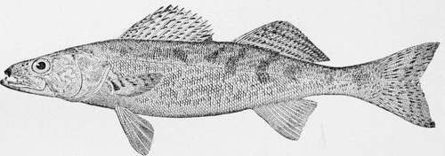
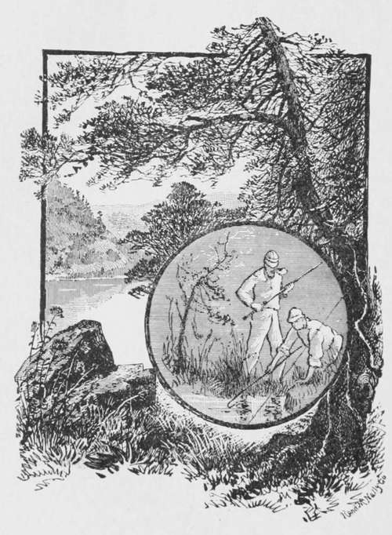

The Wall-Eyed Pike
Description
This section is from the book "American Game Fishes", by W. A. Perry. Also available from Amazon: American Game Fishes: Their Habits, Habitat, and Peculiarities; How, When, and Where to Angle for Them.
The Wall-Eyed Pike
The Wall-eyed Pike or Pike-Perch, so-called, belongs to the Acanthopherous species bearing, as the name signifies, - spines. These fish have various names, in various localities. In the North-west, and along the Ohio and Tennesee rivers, they are, for some unknown reason, called Salmon, and many of those who thus misname them will insist, most tenaciously, that they are Salmon, and no amount of argument will convince them to the contrary. This reminds me of the "Trout" in the Southern states that are, as every well-informed angler knows, Black Bass.
The Wall-eyed Pike is gregarious, nearly always running together, in schools of greater or less numbers, and when fishing for them, if you get one Wall-eye you will generally get more.
They are found in most Northern waters, and in some are very numerous; are eager biters, and not particular as to bait, taking almost anything that is offered. They spawn in spring on the cobble-stones or pebbles that line the shores of the lakes or streams.
They appear in large schools at this time, the bottom frequently being covered by them. Their eggs are very glutinous-stick fast to anything they touch, and do not become detached (unless by violence) till hatched out. There are, iri some of our lakes and rivers, some large specimens of this fish, weighing as high as thirty pounds; these usually are found in deep holes where they can secrete themselves under sunken logs or the banks. These big fellows are generally of a rusty color; the edges of their scales are sharp and rough. There is a good deal of difference in the color of these fish in different waters; in some lakes, especially in the "Lake Park" region of Minnesota, where they are found in great numbers-some of them (and in some lakes most of them) are dark russet on the back, this color gradually fading down the sides till it blends with the white on the belly.
The difference in color in different individuals is so marked that one is often tempted to believe them to be of different species. They all have however that distinctive mark belonging to this fish, the white tip at the lower caudal extremity; this is always found in the true Pike-Perch, or Wall-eyed Pike. There is another member of the same family called the "Rock Pike." I have never seen it in the West, but in eastern waters, especially in Lake Champlain, they are quite numerous.
This fish is darker, rounder and smaller than the common Wall-eye. They are frequently found on the rocks lying perfectly still.
The flesh of the fish is firm, white and of fine flavor. It is not often they take a hook; we used to spear them at night.
The common Wall-eye may occasionally, in time of high water, be found ascending small creeks, that empty into lakes, and they will then crowd up through grass till their backs are out of the water; they only do this in the spring freshets, and then only when the water is uncommonly high, which leads me to believe that they are seeking other waters as these creeks when they are thus found have their source in some large slough. The fish are often found in such sloughs, after these creeks are dry.
These fish, in still water, are not good game, as a general thing, though I once caught one in "Big Twin Lake," in Wisconsin, that was game enough for anyone. I was trolling for Mascalonge, and had caught a twenty-nine and one-half-pounder with which I had a fight of an hour and a-half before I got him in the boat, when I had a tremendous strike. Down went the fish into deep water, and there he staid. I told my guide I did not know how big he was, but was satisfied he was larger than the one we had caught yesterday. We pulled for shoal water, about half a mile away, but the fish kept down in spite of my efforts to bring him to the surface.
Wall-Eyed Pike, or Dorn-Stizostedium vitrcum.
We finally stopped and reeled in. It was slow and difficult work, but he finally showed up and it was only a six and one-half-pound Wall-eye! How a fish of that size could offer so much resistance was, and is yet, a mystery.
Take these fish in swift water and they are as full of vim, and fight, as any fish, except the Brook Trout.
As an edible fish the Wall-eye may be classed A No i. The flesh is white, firm and flaky. Steamed, baked, broiled or fried in butter, they are hard to beat.
There is no place in the United States, to my knowledge, where the Wall-eye is more plentiful than in the lake region of Northern Wisconsin, along the line of the Milwaukee, Lake Shore and Western Ry.
This road, runs clear around and incloses hundreds of lakes, where not only the Wall-eye is plentiful, but Mascalonge, Bass, Pickerel and Trout are found in great numbers.
In 1868, in company with the Hon. D. O. Finch, of Des Moines, Iowa, and a gentleman by the name of Deaver, I went to a small inlet on the west side of Spirit Lake, in Dickinson County, Iowa, to fish for Wall-eyes and Pickerel. We had poles, cut from iron-wood, near the lake, coarse lines, and big hooks. We had no boat, so we rolled up our trousers and waded out to the edge of deep water, where the little inlet purled over the shelving pebbles into the lake. We had a tin or two to commence with, but ere long we had all the fins we wanted.
Sport? Yes, we had it, and plenty of it. No sooner would the hook strike the water than with a whirl and a splash a Pike or Pickerel would take it; then the fun would commence. Now this way and now that he would go, making the tough iron-wood bend nearly to the butt; and away we would go for the shore.
Various gyrations of Mr. Pike, or Mr. Pickerel, as the case might be, would detain us more or less on the way, but in the end we slid him out on the pebbly shore.
Finch nearly went crazy. When he had hooked one, he would stand, legs wide apart, eyes sticking out, both arms apparently all elbows, and let it play awhile. Then he would start for the shore, with his pole over his shoulders, dragging his fish, and finally sliding him out on the shore. He would square himself in front of his victim and deliver a lecture-quotations from Latin, Greek, French, Demosthenes and Cicero and other ancient heroes. The classics were reviewed as he fired ancient history at the poor fish; then he would extract the hook, fix his bait and go in again.
The fish run large, several of the Pickerel tipping the beam at ten to twelve pounds each, and the Pike averaging some four pounds. We returned a good many of them to the water for we had all we could use within a few minutes after we commenced fishing.
We fished some three hours and took home seventy-five Pike only. That afternoon will long be remembered by all of us-as one of the most enjoyable of our lives.
by A. A. Mosher.

Continue to: